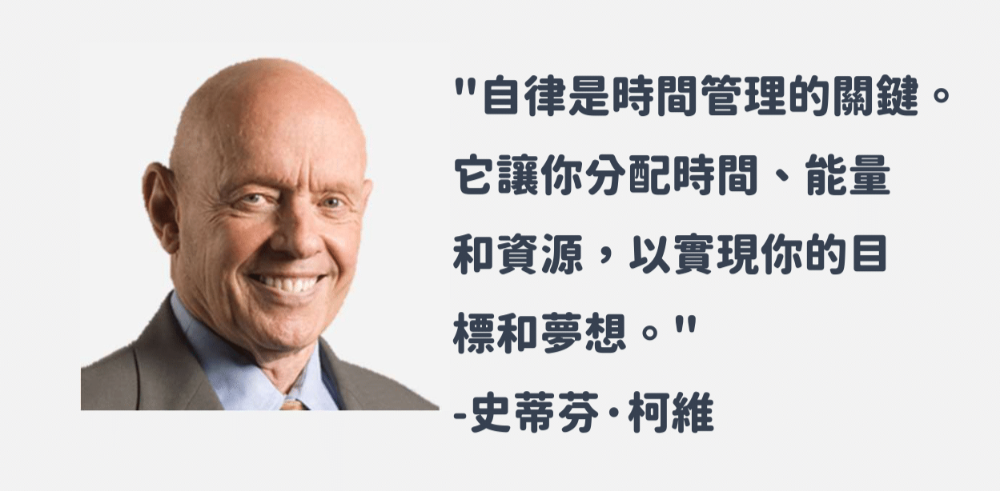
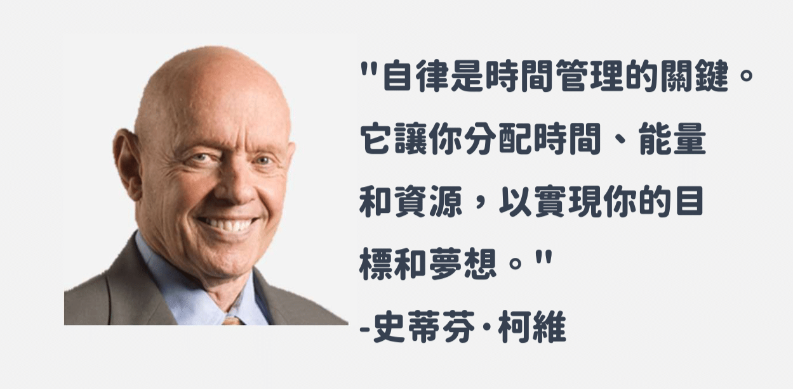

對你而言，「自律」是怎樣的一件事呢？
有些人覺得，聽起來是一件困難、很耗費耐心的事情，也有人覺得自己因自律而開始把握時間、掌握方向。
歡迎蒞臨本網站，在這邊要與你一同摸索，什麼是自律，什麼又是自己能夠接受的自律模式呢？

 

自律是一種重要的生活態度和價值觀，也是一種能力，使我們能夠自我約束、自我管理，並追求目標和夢想。
當自律成為一種內在的動力，就能體現在工作和學習上，也貫穿於生活的各個方面。
當我們能夠紀律自己，按時完成工作任務，培養健康的生活方式，我們會發現自己更加高效、更有時間和空間去追求我們真正想要的事物。自律讓我們遠離拖延症和浪費時間的行為，提高我們的效率和生活品質。
當我們能夠堅持自己的計劃和目標，不因外在環境或誘惑而動搖，自信心和決心會逐漸增強。自律使我們更加堅韌，能夠面對挑戰和困難，並努力克服它們。這種堅持不懈的態度是成功的關鍵，它讓我們能夠克服各種困難，實現我們的目標。
自律使我們能夠更好地與他人合作和溝通，以更有條理和負責任的方式處理人際關係。我們對自己的承諾和約定負責，同時也尊重他人的時間和需求。這種自律的態度讓我們在工作和社交場合中贏得信任和尊重，進而建立長久的人際關係。
我們能夠自律地管理自己的時間、資源和能量，我們能夠更好地專注於自己的目標和理想。自律讓我們能夠積極主動地學習和成長，不斷追求進步和提升。無論是在職業生涯、學術領域還是個人生活中，自律都是實現成功的重要基石。
我們都知道自律絕非易事，或許我們可以透過逐步的練習、規劃，讓我們能夠藉此自我提升，也都祝我們彼此能夠達成自己的目標！